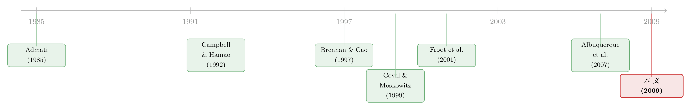

你以为美国人在「追涨」外国股票，其实他们手里攥着一份全球情报
本文读的是 Albuquerque, Bauer & Schneider (2009, JFE)：美国投资者在外国股市的净买入，会随许多国家的收益率同向波动——作者把这称作「全球追涨」。他们用一个含全球因子的非对称信息模型证明，这不是美国人「人傻钱多」地追趋势，而恰恰是因为他们握有一种对多国同时有用的全球私有信息。一个全球因子，能解释这些「因私有信息而生」的交易里一半以上的变动；而私有信息又占了全部交易约一半的变动。
1 一个老掉牙的「追涨」之谜
先从一个被反复观察到的现象说起。美国投资者在某个外国市场的净买入，往往和那个市场的收益率同向移动：那边股价涨，美国人就买；那边跌，美国人就卖。这个现象有个专门的名字，叫追涨 (return chasing)。
追涨听起来不太体面。最流行的解释是这样的：美国人在外国市场是「外人」，缺少当地投资者掌握的本地私有信息 (local private information)。在一个充满本地私有信息的世界里，信息更差的美国人只能更依赖公开信号，于是对公开消息反应过度——好消息一出就追着买，坏消息一出就慌着卖。如果公开信号足够重要，这套机制就同时能产生两件事：追涨，以及美国人在外国市场上的跑输 (underperformance)。
逻辑很顺，对吧？信息差 → 追涨 + 跑输。这几乎成了「本地信息观」的标准故事。
但接着，一个让这套故事下不来台的事实浮现了。如果本地私有信息真的那么重要，那本地人就该比外国人赚得多。 可经验证据却乱成一团：有些研究发现本地人赢（Shukla and van Inwegen, 1995；Hau, 2001），有些却发现外国人反而赢——Grinblatt and Keloharju (2000) 在芬兰、Seasholes (2000) 在新兴市场、Froot and Ramadorai (2008) 在机构资金流里，都看到了外资跑赢的影子。
这就尴尬了。本地信息观需要「外国人信息差、所以跑输」。可一旦外国人有时反而跑赢，你就得被迫承认：外国人有时居然掌握着连本地人都没有的、针对某个特定国家的私有信息。这在直觉上说不通——凭什么一个美国人会比法国人更懂法国公司？
矛盾摆在这里。要么承认追涨就是「naive 的趋势追随」，要么承认外国人莫名其妙地拥有别国的本地情报。本文的作者们说：你们两个都猜错了方向。
2 反转：信息不一定是「本地的」，也可以是「全球的」
真正关键的一步，是把私有信息从「本地」这个框里解放出来。
作者提出的概念叫全球私有信息 (global private information)——一种同时对许多国家的交易都有价值的私有信息。它不属于任何一个国家，而是关于一个跨国共享的全球因子。
举个论文里的例子。设想关于科技行业前景的市场研究。美国是这个行业全球增长的主导者，因此关于美国科技业未来的判断，对欧洲科技股的估值同样重要。一个在美国市场摸爬滚打多年的成熟投资者，对全球科技趋势的识别能力天然就更强——于是他在欧洲也能跑赢当地人。
这并不是凭空假设。「国际股票收益里存在全球因子」本身是个稳健的典型事实，而在大量实证研究里，这个全球因子干脆就是被美国变量捕捉的（Campbell and Hamao, 1992；Harvey, 1991）。换句话说，美国人对本国经济的「本地」信息，搬到国际舞台上，摇身一变就成了对所有人都管用的「全球」信息。
一旦接受了这个设定，开头那个矛盾就自动化解了：本地冲击（藏在本地私有信号里）偏向本地人，全球冲击（藏在全球私有信号里）偏向美国人。所以不同研究在不同时段、不同国家，自然会量出有时外资赢、有时本地赢的「混合」结果——这不再是悖论，而是模型的预测。
更妙的是，全球私有信息会留下三个可检验的脚印：
- 全球追涨：美国人在某国的净买入，不只和该国收益同向，还会和其他国家的收益同向。
- 混合的业绩证据：如上所述，外资有时赢有时输是常态。
- 跨国相关的交易：由全球私有信息驱动的交易，会在各国之间正相关——因为它们都来自同一个全球信号。
要把这三件事讲清楚，光靠直觉不够，得有一个能同时容纳本地因子和全球因子、本地信息和全球信息的均衡模型。这正是本文的硬功夫所在。
3 模型：把「全球因子」塞进一个非对称信息的交易世界
这是一篇有理论模型的论文，而且模型是它全部论证的地基，所以我们慢一点、一步一步把它拆开。模型搭在 Admati (1985) 的静态多资产理性预期框架上，Brennan and Cao (1997) 把它推到了多期，但他们的设定里没有全球因子——本文的贡献正是补上这一块，并给出了闭式解。
3.1 资产与因子
世界由 \(n\) 个区域 (regions) 组成，其中一个子集构成美国。每个区域 \(j\) 有一个股票指数，是对终期红利 \(U_j\) 的索取权。关键在于红利的结构——它由一个本地因子和一个对所有区域都相同的全球因子共同驱动：
$$ U = m_u\, i + U^l + U^g\, i, $$
这里 \(U^l\) 是 \(n\times 1\) 的本地因子向量，\(i\) 是全 1 向量，\(U^g\) 是那个全球因子标量。所有因子均值为零、正态分布；本地因子跨区域不相关、方差都是 \(1/p_l\)；全球因子方差 \(1/p_g\)，与本地因子不相关。于是红利的协方差矩阵是
$$ S = p_l^{-1} I + p_g^{-1}\, i\, i', $$
那个 \(i\,i'\) 项，就是全球因子在所有国家之间「拧」出的正相关。
3.2 投资者与他们的信号
投资者是 CARA（常绝对风险厌恶）类型，对终期财富的效用为
$$ U(W_T) = -\exp\!\left(-\tfrac{1}{r} W_T\right), $$
\(1/r\) 是绝对风险厌恶系数，\(r\) 越大越敢冒险。
每个人都能看到公开信号；本地的公开信号 \(y_{t,j} = U_j + u_{t,j}\) 只告诉你区域 \(j\) 的事，全球公开信号 \(y^g_t = \frac{1}{n}\sum_j U_j + u^g_t\) 则关乎所有区域。
私有信息分两层。本地私有信号只有区域 \(j\) 的本地投资者能收到：
$$ z_{t,j}(i) = U_j + \varepsilon_{t,j}(i). $$
而一部分被称作全球投资者 (global investors) 的人，额外还能收到关于红利之和（即全球因子）的全球私有信号：
$$ z^g_{t,j}(i) = \frac{1}{n}\sum_{j=1}^{n} U_j + \varepsilon^g_{t,j}(i). $$
3.3 全文的「阿基米德支点」：那个唯一的关键假设
整篇文章的引擎，是下面这一句不起眼的假设：
在美国，能收到全球私有信号的投资者比例 \(a^{US}\)，高于世界平均水平。
形式上，记 \(a\) 为全世界收到全球信号的投资者比例，\(u\) 为美国占的区域比例，则非美国区域的对应比例被压到了
$$ a_j = a^{other} := \frac{a - u\,a^{US}}{1 - u}. $$
就这么一个「美国人里懂全球的更多」的不对称设定，撑起了后面所有的预测。作者还提醒：这与 Brennan and Cao (1997) 假设各国信息禀赋对称恰好相反——信息禀赋的不对称，正是新东西所在。
为什么这个假设合理？作者搬出了一串宏观证据：Lumsdaine and Prasad (2003) 估计 17 个 OECD 国家工业生产增长的共同成分时，美国工业生产在其中的平均权重高达 38.92%，远超其他任何国家；Kwark (1999)、Glick and Rogoff (1995)、Kim (2001) 也都发现美国的产出、货币政策冲击会显著外溢到别国。掌握了美国经济，等于掌握了半个世界的脉搏。
3.4 价格是怎么定出来的
接下来是模型的核心机制。给定 CARA 效用和正态信号，投资者 \(i\) 的最优资产需求有一个干净的形式（论文式 13）：
$$ A_t(i) = r\, K_t^i\big(E_t^i[U] - P_t\big), $$
这里 \(K_t^i\) 是投资者 \(i\) 后验协方差的逆——也就是他的知识/精度。直觉很朴素：你预期的收益 \(E_t^i[U]-P_t\) 越高、你越「懂」（\(K_t^i\) 越大）、你越敢冒险（\(r\) 越大），你就买得越多。
把所有人的需求加总、令市场出清（知情投资者必须接下流动性交易者的全部抛盘），就解出了均衡价格。这是全文最该被看懂的一个方程，我们把它逐块标注出来：
第一项说的是：价格反映的是全市场如何学习红利，但不是简单平均，而是按知识加权——信息越好的人，越能左右价格。第二项说的是：知情投资者要从流动性交易者手里接下 \(X_t\) 单位的资产，就得要一个价格折扣作为风险补偿，这个折扣随他们的风险厌恶上升、随平均知识下降。
3.5 为什么「本地」和「全球」走向相反
有了这套机器，就能讲清那个最精妙的反转。
本地私有信息会产生「负」的追涨。 一个带来好消息的本地私有信号，部分会被价格上涨反映出来；本地的知情者据此向美国人卖出。美国人相对于对称信息基准是反应不足的，于是他们在价格上涨时反而卖——本地私有信息和美国人的买入之间是负相关。在一个本地信息观的世界里，追涨只能靠本地的公开信号硬撑。
全球私有信息却产生「正」的追涨。 一个利好的全球私有信号，会同时推高许多国家的价格；收到信号的美国人在这些国家买入，而当地人对自己不太懂的全球因子反应不足，于是卖出。这一次，美国人的买入和价格上涨同向——这就是全球追涨。
作者证明了一个漂亮的结论：在一个本地私有信息足够强、以至于本地偏好 (home bias) 成立的世界里（数据正是如此），无论来的是全球公开信号还是全球私有信号，第二种效应总是更强，结果都是美国人在价格上涨时买入。本地信息给了世界本地偏好，全球信息给了世界追涨——两件看似矛盾的事，在同一个均衡里被同时生产出来。
（关于「外地人到底有没有信息优势」这个母题，本博客也聊过一篇相反角度的：《在全球市场里，「老乡」基金经理算不算一种主场优势？》。）
4 识别策略与数据：怎么把「因私有信息而生的交易」量出来
模型给了三个预测，可「私有信息驱动的交易」并不能直接观测。本文实证部分的巧劲，正在于把它从总交易里分离出来。
数据上，过去这类研究多半盯着单一国家或一小段时间。本文不同：它用的是美国投资者对八个主要外国市场月度的股票买入与卖出，时间跨度 1977–2003。能横跨多个市场、对齐着比较，正是识别「全球追涨」和「跨国相关的私有信息交易」的前提——你必须同时看到很多国家，才能谈得上「全球」。
做法是先估出国际股票流和收益里可预期的成分（用一组公开信息的实证模型），再把交易分解：一部分由公开信息和流动性需求解释，剩下的、与价格信息相关的残差，就被归为因私有信息而生的交易。然后，对这八国的「私有信息交易」做因子分析，看一个全球共同因子能解释多少跨国的共同变动。
如果世界主要是本地私有信息，这些交易跨国之间该几乎不相关——美国人因为研究法国而买法国股票，没理由同时去买德国股票。可如果信息是全球的，相关性就该很高。
5 主要结果：一半，一半，三成
结果落点非常清楚，三个数字撑起全文：
第一，全球追涨真实存在。 在八国月度数据里，美国人的净买入确实和多国收益同向。而且，大部分全球追涨发生在高频——去趋势后的资金流与收益的相关性，和原始相关性几乎一样。这一点很要命：如果追涨只是市场渐进开放（低频整合）造成的，去趋势后相关性该消失才对。高频相关性不像是渐进整合的产物，却正好符合非对称信息的设定。
第二，私有信息交易高度跨国相关。 一个全球因子，解释了八国「因私有信息而生的交易」里略超过一半的变动。同时，私有信息本身占了全部交易约一半的变动。
第三，把两者一乘，全球私有信息大约解释了美国人海外交易的 30%。作者据此下结论：全球私有信息在国际股票市场里扮演了重要角色，而且——据他们所知——这是第一篇同时展示全球追涨与全球私有信息的论文。
别忽略了一个对照基准：一个对称信息的基准模型，对追涨和本地偏好两件事都解释不了。在标准假设下（所有人 HARA 偏好、所有资产可交易），均衡会出现两基金分离，人人按相同比例持有所有风险资产——没有本地偏好，也没有系统性地与收益相关的跨境资金流。是信息的不对称，让本地偏好和追涨得以同时成立。
6 文献脉络
把这条线捋一捋，会看得更清楚。
源头是非对称信息下的理性预期均衡：Admati (1985) 给出了多资产静态框架，奠定了「价格如何聚合分散信息」的基本语言。Brennan and Cao (1997) 把它推向多期，用来解释国际组合资金流，但他们假设各国信息禀赋对称，因而封死了全球因子的位置。

与此平行的，是本地偏好与本地信息这一支：Coval and Moskowitz (1999) 发现连美国国内都存在「本地偏好」，并把它归因于本地的信息优势；Froot, O'Connell and Seasholes (2001)、Bohn and Tesar (1996a) 则在国际资金流里记录下了追涨这一现象。再加上 Campbell and Hamao (1992)、Harvey (1991) 反复发现「全球因子常被美国变量捕捉」，所有线索都指向同一个缝隙——美国人的本地信息，可能在全球都管用。
本文的前身是作者自己的 Albuquerque, Bauer and Schneider (2007)，那篇用定量均衡方法做了国际股票流与收益。而 2009 年这一篇，把「全球私有信息」这个概念正式立起来，并给出了闭式解和三国预测的实证检验，正好落在「非对称信息均衡」与「本地偏好/追涨实证」两条线的交汇处。
7 评论与延伸（Q&A + 研究方向）
(a) 几个可能的疑问
Q：「全球私有信息」和「美国人就是更聪明 / naive 趋势追随」到底有什么区别？
关键区别在业绩方向和频率结构。naive 趋势追随预测美国人系统性跑输；全球私有信息预测美国人在全球因子上跑赢、在本地因子上跑输，于是业绩证据混合。频率上，naive 追随或渐进整合应主要体现在低频，去趋势后消失；本文发现追涨在高频依然存在，更符合信息驱动。
Q：为什么对称信息模型连本地偏好都解释不了？
因为在 HARA 偏好 + 资产全可交易的标准设定下会出现两基金分离：所有人按相同比例持有全部风险资产。既然人人持仓比例一样，就没有偏向本国资产的倾向，也没有系统性地与国别收益挂钩的跨境流动。要打破它，必须引入信息的不对称。
Q：怎么能确定那 30% 真的是「私有信息」，而不是没建模好的公开信息或流动性需求？
这是识别上最该警惕的地方。作者的做法是先用公开信息模型剥掉可预期成分，把残差归为私有信息交易，再看其跨国因子结构。逻辑自洽，但「残差 = 私有信息」终究是一个定义，对公开信息模型的设定相当敏感——这是我最想看到更多稳健性检验的地方。
Q：全球追涨发生在高频，这个事实为什么如此重要？
因为它几乎是用来「证伪」竞争解释的判决性证据。市场渐进开放会让美国人随着可投资度上升而逐步加仓，同时边际投资者更分散、要求更低风险溢价、推高价格——这会产生低频的正向共动。但本文显示去趋势前后相关性几乎不变，说明追涨主要在高频，渐进整合解释不了。
Q：模型说本地私有信息产生「负」追涨，可现实里我们观察到的是「正」追涨，这不矛盾吗？
不矛盾，而是叠加的结果。本地私有信号确实拉出负向的「美国人买入—收益」相关；但在一个本地偏好成立（本地信息足够强）的世界里，作者证明全球信号（无论公开还是私有）带来的正向效应总是更强，净效应就是正的追涨。是两股力量打架，全球的那股赢了。
Q：这对「外资是不是聪明钱」的争论意味着什么？
它把争论从「外资到底聪明还是愚蠢」重新框定为「外资在哪类因子上聪明」。在全球因子上，作为外资的美国人有优势；在本地因子上则相反。所以与其问外资整体业绩，不如把收益按因子分解——这也是本文留给后人最有价值的方法论提示。（与此相关，可参见《你手里的「独家消息」，可能整个市场早就知道了》。）
(b) 几个可能的研究问题与提案
1. 把「全球私有信息」搬到公司债 / 信用市场。 【经济故事】全球因子在信用利差里同样强势（共同的违约周期、全球风险偏好）。如果美国机构对全球信用周期有信息优势，那「全球追涨」应在跨国公司债资金流里重现，且应预示外资在信用因子上的超额收益。 【可行性】中。需要跨国公司债的持有/交易数据（如 TRACE 跨境部分、欧洲的逐笔成交、EPFR 债券基金流），识别上可复刻本文的「剥离公开信息 → 残差因子分析」框架。难点是债券交易稀疏、价格噪声大，私有信息残差更难干净分离。
2. 用持有人结构检验「谁的全球信息更强」。 【经济故事】本文把美国设为全球信息中心。但 2009 年之后，资本市场重心在移动。能不能用不同国别机构的持仓，量出「全球信息优势」是否仍集中在美国，还是已向其他金融中心扩散？ 【可行性】高。FactSet/13F 类持仓数据 + Koijen-Yogo 式需求体系可估出各国投资者对全球因子的暴露与业绩。识别清晰，数据可得，是个相对 doable 的实证。
3. 全球私有信息与流动性的交互。 【经济故事】如果全球私有信息交易高度跨国相关，那它在压力期会同时冲击多国流动性——这正是「资本同时外逃」的微观基础。可检验：私有信息因子载荷高的国家，是否在全球波动冲击下流动性同步恶化更严重？ 【可行性】中。需要逐笔成交构造的流动性度量 + 全球波动（VIX 等）作为冲击。识别可用事件窗口（如 2008、2020 三月）。挑战在于把「私有信息交易」与单纯的流动性抛售区分开。
4. 高频检验「全球追涨」的因果。 【经济故事】本文用月度数据。若能在更高频上，围绕全球性宏观新闻发布（FOMC、美国就业数据）做事件研究，观察美国投资者跨国净买入是否在新闻前后系统性领先于多国价格，就能更接近「信息领先于价格」的因果。 【可行性】中到低。需要高频跨境交易数据，公开数据极难获得；可行性主要受数据可得性限制，但识别逻辑很干净。
我的判断
这篇论文最漂亮的地方，是用一个概念上的小动作——把私有信息从「本地」放大到「全球」——同时解开了三个看似互不相干的结：追涨、本地偏好、以及外资业绩的混乱证据。模型给出了闭式解，把不同冲击对追涨的贡献写成了基本面参数的可处理函数，这在国际金融的理论文献里是稀缺的清晰度。「高频追涨」这个实证事实，更是几乎一击命中地排除了渐进整合的竞争解释。
我对识别的主要担忧在第 4 节那个分解：「私有信息交易 = 剥掉公开信息后的残差」，本质上是一个定义，它的大小完全取决于公开信息模型设得有多全。如果漏掉了某个本该是公开的全球预测变量，它就会被错误地算进「私有信息」，那 30% 就可能被高估。我想看到的，是对公开信息模型设定做更系统的稳健性检验，以及——如果可能——用某种外生的信息冲击（比如某国突然向外资开放、可投资度跳变）来给「全球私有信息」找一个更硬的工具。
后续最值得做的，是把这套「按因子分解外资业绩」的思路推进到信用市场和更细的持有人层面：在公司债和外资持有人这条线上，全球私有信息到底有多重要，目前几乎还是一片空白。
参考文献
Admati, A.R. (1985). A noisy rational expectations equilibrium for multi-asset securities markets. Econometrica 53, 629–657.
Albuquerque, R., Bauer, G.H., Schneider, M. (2007). International equity flows and returns: a quantitative equilibrium approach. The Review of Economic Studies 74, 1–30.
Albuquerque, R., Bauer, G.H., Schneider, M. (2009). Global private information in international equity markets. Journal of Financial Economics 94(1), 18–46.
Bohn, H., Tesar, L.L. (1996a). US equity investment in foreign markets: portfolio rebalancing or return chasing? American Economic Review Papers and Proceedings 86, 77–81.
Brennan, M.J., Cao, H.H. (1997). International portfolio investment flows. Journal of Finance 52, 1851–1880.
Campbell, J.Y., Hamao, Y. (1992). Predictable stock returns in the United States and Japan: a study of long-term capital market integration. The Journal of Finance 47, 43–69.
Coval, J.D., Moskowitz, T.J. (1999). Home bias at home: local equity preference in domestic portfolios. Journal of Finance 54, 2045–2073.
Froot, K.A., O'Connell, P., Seasholes, M. (2001). The portfolio flows of international investors. Journal of Financial Economics 59, 151–194.
Froot, K.A., Ramadorai, T. (2008). Institutional portfolio flows and international investments. Review of Financial Studies 21, 937–971.
Glick, R., Rogoff, K. (1995). Global versus country-specific productivity shocks and the current account. Journal of Monetary Economics 35, 159–192.
Grinblatt, M., Keloharju, M. (2000). The investment behavior and performance of various investor types: a study of Finland's unique data set. Journal of Financial Economics 55, 43–67.
Harvey, C.R. (1991). The world price of covariance risk. Journal of Finance 46, 111–158.
Hau, H. (2001). Location matters: an examination of trading profits. Journal of Finance 56, 1959–1983.
Kim, S. (2001). International transmission of US monetary policy shocks: evidence from VARs. Journal of Monetary Economics 48, 339–372.
Kwark, N. (1999). Sources of international business fluctuations: country-specific shocks or worldwide shocks? Journal of International Economics 48, 367–386.
Lumsdaine, R.L., Prasad, E.S. (2003). Identifying the common component in international economic fluctuations: a new approach. Economic Journal 113, 101–127.
Seasholes, M. (2000). Smart foreign traders in emerging markets. Unpublished working paper, University of California, Berkeley.
Shukla, R.K., van Inwegen, G.B. (1995). Do locals perform better than foreigners? An analysis of UK and US mutual fund managers. Journal of Economics and Business 47, 241–254.